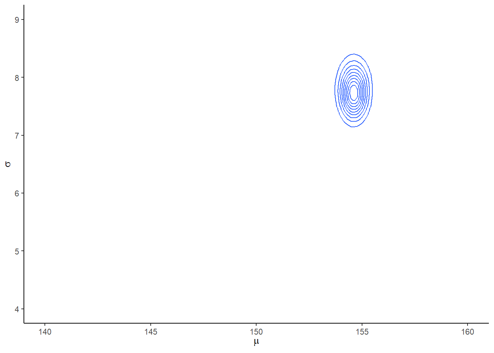

4 Geocentric Model
4.1 Why normal distributions are normal
ランダムウォークを繰り返すと、分布が正規分布にちかづいていく。
pos <-
crossing(person = 1:100,
step = 0:16) %>%
mutate(dev = map_dbl(step, ~ifelse(.==0,0,runif(1,-1,1))))
pos <- pos %>%
group_by(person) %>%
mutate(sum_dev = cumsum(dev)) %>%
ungroup()
#Figure4.2
##above
pos %>%
ggplot(aes(x=step,y=sum_dev,group=person))+
geom_line(aes(color = person < 2,
alpha = person < 2))+
geom_vline(xintercept=c(4,8,16), linetype=2)+
scale_color_manual(values = c("skyblue4", "black"))+
scale_alpha_manual(values = c(1/5, 1))+
scale_x_continuous("step number", breaks = seq(0,16,2))+
theme(legend.position = "none") p1 <- pos %>%
filter(step==4) %>%
ggplot(aes(x=sum_dev))+
geom_line(stat = "density")+
labs("4 steps")
p2 <- pos %>%
filter(step==8) %>%
ggplot(aes(x=sum_dev))+
geom_line(stat = "density")+
labs("8 steps")
pos %>%
filter(step==16) %>%
summarise(sd = sd(sum_dev)) ->sd
p3 <- pos %>%
filter(step==16) %>%
ggplot(aes(x=sum_dev))+
stat_function(fun = dnorm,
args = list(mean = 0, sd = sd[[1]]),
linetype = 2)+
geom_density(color = "transparent", fill = "dodgerblue3", alpha = 1/2) +
labs("16 steps")
library(patchwork)
p1|p2|p3 & coord_cartesian(xlim=c(-6,6))4.2 Normal by multiplication
掛け算になる場合でも、変化が小さければ正規分布に近づくことがある。
set.seed(4)
prod(1 + runif(12, 0, 0.1))## [1] 1.774719growth <- tibble(growth = map_dbl(1:10000, ~ prod(1 + runif(12, 0, 0.1))))
ggplot(data = growth, aes(x = growth)) +
geom_density()
成長にもたらす効果が小さいほど、効果の積が効果の和に近づくので、正規分布に近づく。
growth_big <- tibble(growth = map_dbl(1:10000, ~ prod(1 + runif(12, 0, 0.5))))
growth_small <- tibble(growth = map_dbl(1:10000, ~ prod(1 + runif(12, 0, 0.01))))
ggplot(data = growth_big, aes(x = growth)) +
geom_density()ggplot(data = growth_small, aes(x = growth)) +
geom_density()
効果が大きいときも、対数をとると正規分布に近づく。これは、対数では積と和が等しくなることによる。
log_growth_big <- log(growth_big)
ggplot(data = log_growth_big, aes(x = growth)) +
geom_density()4.3 Gaussian model of height
クンサン族の身長データでモデリングを行う。
データは、Howellらが収集したデータ。身長は18歳以下では年齢と強く相関するので、ひとまず18歳以上を考える。
data(Howell1)
(d <- as_tibble(Howell1))## # A tibble: 544 × 4
## height weight age male
## <dbl> <dbl> <dbl> <int>
## 1 152. 47.8 63 1
## 2 140. 36.5 63 0
## 3 137. 31.9 65 0
## 4 157. 53.0 41 1
## 5 145. 41.3 51 0
## 6 164. 63.0 35 1
## 7 149. 38.2 32 0
## 8 169. 55.5 27 1
## 9 148. 34.9 19 0
## 10 165. 54.5 54 1
## # … with 534 more rowsstr(d)## tibble [544 × 4] (S3: tbl_df/tbl/data.frame)
## $ height: num [1:544] 152 140 137 157 145 ...
## $ weight: num [1:544] 47.8 36.5 31.9 53 41.3 ...
## $ age : num [1:544] 63 63 65 41 51 35 32 27 19 54 ...
## $ male : int [1:544] 1 0 0 1 0 1 0 1 0 1 ...precis(d, hist = FALSE)## mean sd 5.5% 94.5%
## height 138.2635963 27.6024476 81.108550 165.73500
## weight 35.6106176 14.7191782 9.360721 54.50289
## age 29.3443934 20.7468882 1.000000 66.13500
## male 0.4724265 0.4996986 0.000000 1.00000# 18歳以下に限定
d2 <- d %>%
filter(age >= 18)身長についてモデリングを行う。
d2 %>%
ggplot(aes(x=height))+
geom_histogram(binwidth =5, fill="grey92",color="black")+
theme_bw()
身長は正規分布していると思われるため、モデル式は以下の通りとする。
\(h_{i} \sim Normal(\mu, \sigma)\)
事前分布は以下のとおりとする。
\(\mu \sim Normal(178, 20)\)
\(\sigma \sim Uniform(0,50)\)
事前分布を確認する。
# mu
p1 <- tibble(x = seq(from = 100, to = 250, by = .1)) %>%
ggplot(aes(x = x, y = dnorm(x, mean = 178, sd = 20))) +
geom_line() +
scale_x_continuous(breaks = seq(from = 100, to = 250, by = 75)) +
labs(title = "mu ~ dnorm(178, 20)",y = "density")
p1#sigma
p2 <- tibble(x = seq(from = -10, to = 60, by = .1)) %>%
ggplot(aes(x = x, y = dunif(x, min=0,max=50))) +
geom_line() +
scale_x_continuous(breaks = seq(from = 0, to = 50, by = 10)) +
labs(title = "sigma ~ dunif(0,50)",y = "density")
p2
事前分布からサンプリングをしてみる。
n <- 1e4
set.seed(4)
sim <-
tibble(sample_mu = rnorm(n,178,20),
sample_sigma = runif(n,0,50)) %>%
mutate(height = rnorm(n, sample_mu, sample_sigma))
p3 <-
sim %>%
ggplot(aes(x=height))+
geom_density(fill="grey33")+
scale_x_continuous(breaks = c(0, 73, 178, 283)) +
scale_y_continuous(NULL, breaks = NULL) +
ggtitle("height ~ dnorm(mu, sigma)") +
theme(panel.grid = element_blank())
p3
\(\mu \sim Normal(178, 100)\) が事前分布だとすると…
sim2 <-
tibble(sample_mu = rnorm(n, mean = 178, sd = 100),
sample_sigma = runif(n, min = 0, max = 50)) %>%
mutate(height = rnorm(n, mean = sample_mu, sd = sample_sigma))
# compute the values we'll use to break on our x axis
breaks <-
c(mean(sim2$height) - 3 * sd(sim2$height), 0, mean(sim2$height), mean(sim2$height) + 3 * sd(sim2$height)) %>%
round(digits = 0)
text <-
tibble(height = 272-25 ,
y = .0013,
label = "tallest man",
angle = 90)
p4 <-
sim2 %>%
ggplot(aes(x = height)) +
geom_density(fill = "black", size = 0) +
geom_vline(xintercept = 0, color = "grey92") +
geom_vline(xintercept = 272, color = "grey92", linetype = 3) +
geom_text(data = text,
aes(y = y, label = label, angle = angle),
color = "grey92", size = 4) +
scale_x_continuous(breaks = breaks) +
scale_y_continuous(NULL, breaks = NULL) +
ggtitle("height ~ dnorm(mu, sigma)\nmu ~ dnorm(178, 100)") +
theme(panel.grid = element_blank())
p4全部並べてみると…。
\(\mu\)の事前分布の標準偏差が大きすぎると、身長の事前分布もかなり広くなってしまうことが分かる。身長が負の人や、250cmを越えるような人がいることを仮定していることになる。
(p1+xlab("mu")|p2+xlab("sigma"))/(p3|p4)#身長0未満
sim2 %>%
count(height < 0) %>%
mutate(percent = 100 * n / sum(n))## # A tibble: 2 × 3
## `height < 0` n percent
## <lgl> <int> <dbl>
## 1 FALSE 9587 95.9
## 2 TRUE 413 4.13#身長250以上
sim2 %>%
count(height >=250) %>%
mutate(percent = 100 * n / sum(n))## # A tibble: 2 × 3
## `height >= 250` n percent
## <lgl> <int> <dbl>
## 1 FALSE 7443 74.4
## 2 TRUE 2557 25.64.4 Grid approximationで事後分布を描く
計算には対数尤度を用い、その後戻す。
n <- 200
d_grid <-
crossing(mu = seq(140,160,length.out=n),
sigma = seq(4,9,length.out=n))
grid_function <- function(mu,sigma){
dnorm(d2$height, mean = mu, sd = sigma, log = T) %>%
sum()
}
d_grid <-
d_grid %>%
mutate(LL = map2(mu, sigma, grid_function)) %>%
unnest(LL) %>%
mutate(prod = LL + dnorm(mu, 178,20,TRUE)+
dunif(sigma,0,50,TRUE)) %>%
mutate(prob = exp(prod-max(prod)))事後同時分布を表すと以下のようになる。
d_grid %>%
ggplot(aes(x=mu, y=sigma, z = prob))+
geom_contour()+
labs(x=expression(mu),y=expression(sigma))+
coord_cartesian(xlim = range(d_grid$mu),
ylim=range(d_grid$sigma))+
theme(panel.grid = element_blank())
d_grid %>%
ggplot(aes(x = mu, y = sigma, fill = prob)) +
geom_raster(interpolate = F) +
scale_fill_viridis_c(option = "B") +
labs(x = expression(mu),
y = expression(sigma)) +
theme(panel.grid = element_blank())#ちなみに
d_grid %>%
filter(prob==max(prob))## # A tibble: 1 × 5
## mu sigma LL prod prob
## <dbl> <dbl> <dbl> <dbl> <dbl>
## 1 155. 7.74 -1219. -1228. 14.4.1 事後分布からサンプリングする
set.seed(4)
samples_d <-
d_grid %>%
slice_sample(n=1e4, weight_by = prob, replace= TRUE)\(\mu\)と\(\sigma\)の事後分布からのサンプルより
# muの区間推定
bind_rows(median_hdi(samples_d$mu, .width=0.95),
mean_qi(samples_d$mu, .width=0.95))## y ymin ymax .width .point .interval
## 1 154.5729 153.6683 155.2764 0.95 median hdi
## 2 154.6041 153.7688 155.3769 0.95 mean qi#sigmaの区間推定
bind_rows(median_hdi(samples_d$sigma, .width=0.95),
mean_qi(samples_d$sigma, .width=0.95))## y ymin ymax .width .point .interval
## 1 7.768844 7.140704 8.296482 0.95 median hdi
## 2 7.769450 7.216080 8.371859 0.95 mean qi# 同時分布
samples_d %>%
ggplot(aes(x=mu, y=sigma))+
geom_point(size=0.9,alpha=1/30)+
labs(x=expression(mu[samples]),y=expression(sigma[samples]))+
theme(panel.grid = element_blank())# それぞれの周辺事後分布
samples_d %>%
pivot_longer(cols = mu:sigma, names_to = "param", values_to = "value") %>%
ggplot(aes(x=value))+
geom_histogram(binwidth=0.1,fill="grey33")+
scale_y_continuous(NULL, breaks = NULL) +
xlab(NULL) +
theme(panel.grid = element_blank())+
facet_wrap(~param, scale="free",labeller = label_parsed)4.4.2 rethinking
set.seed(4)
(d3 <- sample(d2$height, size = 20))## [1] 147.3200 154.9400 168.9100 156.8450 165.7350 151.7650 165.7350 156.2100
## [9] 144.7800 154.9400 151.1300 147.9550 149.8600 162.5600 161.9250 164.4650
## [17] 160.9852 151.7650 163.8300 149.8600n <- 200
# note we've redefined the ranges of `mu` and `sigma`
d_grid <-
crossing(mu= seq(from = 150,to = 170,length.out= n),
sigma =seq(from =4, to = 20,length.out= n))
grid_function <- function(mu, sigma) {
dnorm(d3, mean = mu, sd = sigma, log = T) %>%
sum()
}
d_grid <-
d_grid %>%
mutate(log_likelihood = map2_dbl(mu, sigma, grid_function)) %>%
mutate(prior_mu = dnorm(mu, mean = 178, sd = 20, log = T),
prior_sigma = dunif(sigma, min = 0, max = 50, log = T)) %>%
mutate(product = log_likelihood + prior_mu + prior_sigma) %>%
mutate(probability = exp(product - max(product)))
set.seed(4)
d_grid_samples <-
d_grid %>%
sample_n(size = 1e4, replace = TRUE, weight = probability)
d_grid_samples %>%
ggplot(aes(x = mu, y = sigma)) +
geom_point(size = .9, alpha = 1/15) +
labs(x = expression(mu[samples]),
y = expression(sigma[samples])) +
theme(panel.grid = element_blank())d_grid_samples %>%
pivot_longer(mu:sigma) %>%
ggplot(aes(x = value)) +
geom_density(fill = "grey33", size = 0) +
scale_y_continuous(NULL, breaks = NULL) +
xlab(NULL) +
theme(panel.grid = element_blank()) +
facet_wrap(~ name, scales = "free", labeller = label_parsed)4.4.3 Finding posterior with brms
quapとbrmsを用いてモデリングを行う。
# quap
#flist <- alist(
#height ~ dnorm(mu,sigma),
#mu ~ dnorm(178,20),
#sigma ~ dunif(0,50)
#)
#m4.1 <- quap(flist, data=d2)
#precis(m4.1, prob=.95)
# brms
b4.1 <-
brm(
data = d2,
family = gaussian,
height ~ 1,
prior = c(prior(normal(178,20),class=Intercept),
prior(cauchy(0,1), class=sigma)),
iter=2000,warmup=1000,chains =4,
backend = "cmdstanr",
file = "output/Chapter4/b4.1")
plot(b4.1)print(b4.1)## Family: gaussian
## Links: mu = identity; sigma = identity
## Formula: height ~ 1
## Data: d2 (Number of observations: 352)
## Draws: 4 chains, each with iter = 2000; warmup = 1000; thin = 1;
## total post-warmup draws = 4000
##
## Population-Level Effects:
## Estimate Est.Error l-95% CI u-95% CI Rhat Bulk_ESS Tail_ESS
## Intercept 154.61 0.41 153.79 155.40 1.00 2887 2135
##
## Family Specific Parameters:
## Estimate Est.Error l-95% CI u-95% CI Rhat Bulk_ESS Tail_ESS
## sigma 7.76 0.29 7.21 8.33 1.00 3084 2478
##
## Draws were sampled using sample(hmc). For each parameter, Bulk_ESS
## and Tail_ESS are effective sample size measures, and Rhat is the potential
## scale reduction factor on split chains (at convergence, Rhat = 1).b4.1$fit## Inference for Stan model: model_c19008bf3f2b9c2a33b512b5e1155c58-202301301453-1-5f89bc.
## 4 chains, each with iter=2000; warmup=1000; thin=1;
## post-warmup draws per chain=1000, total post-warmup draws=4000.
##
## mean se_mean sd 2.5% 25% 50% 75% 97.5%
## b_Intercept 154.61 0.01 0.41 153.79 154.34 154.61 154.88 155.40
## sigma 7.76 0.01 0.29 7.21 7.56 7.75 7.94 8.33
## lprior -9.16 0.00 0.08 -9.31 -9.21 -9.16 -9.11 -9.01
## lp__ -1227.48 0.02 0.99 -1230.19 -1227.83 -1227.16 -1226.80 -1226.55
## n_eff Rhat
## b_Intercept 2844 1
## sigma 2963 1
## lprior 2886 1
## lp__ 1685 1
##
## Samples were drawn using NUTS(diag_e) at 月 1 30 14:53:45 2023.
## For each parameter, n_eff is a crude measure of effective sample size,
## and Rhat is the potential scale reduction factor on split chains (at
## convergence, Rhat=1).続いて、\(\mu\)の事前分布の標準偏差を0.1にしてみる。
かなり事前分布に引っ張られていることが分かる。
b4.1_2 <-
brm(
data = d2,
family = gaussian,
height ~ 1,
prior = c(prior(normal(178,0.1),class=Intercept),
prior(cauchy(0,1), class=sigma)),
iter=2000,warmup=1000,chains =4,
backend = "cmdstanr",
file = "output/Chapter4/b4.1_2"
)
plot(b4.1_2)b4.1_2$fit## Inference for Stan model: model_103b53ece11c4e90bdd855611995b123-202301301453-1-4680b3.
## 4 chains, each with iter=2000; warmup=1000; thin=1;
## post-warmup draws per chain=1000, total post-warmup draws=4000.
##
## mean se_mean sd 2.5% 25% 50% 75% 97.5%
## b_Intercept 177.86 0.00 0.10 177.67 177.80 177.86 177.93 178.06
## sigma 24.56 0.02 0.94 22.83 23.91 24.54 25.19 26.50
## lprior -6.89 0.03 1.50 -10.98 -7.54 -6.41 -5.76 -5.44
## lp__ -1629.83 0.02 0.97 -1632.47 -1630.21 -1629.54 -1629.14 -1628.88
## n_eff Rhat
## b_Intercept 3304 1
## sigma 3542 1
## lprior 2965 1
## lp__ 1597 1
##
## Samples were drawn using NUTS(diag_e) at 月 1 30 14:53:56 2023.
## For each parameter, n_eff is a crude measure of effective sample size,
## and Rhat is the potential scale reduction factor on split chains (at
## convergence, Rhat=1).# 比較
rbind(summary(b4.1)$fixed,
summary(b4.1_2)$fixed)## Estimate Est.Error l-95% CI u-95% CI Rhat Bulk_ESS Tail_ESS
## Intercept 154.6066 0.40866177 153.789 155.398 1.001184 2887.360 2135.154
## Intercept1 177.8636 0.09863163 177.668 178.055 1.001800 3314.509 2476.8184.4.4 事後分布からのサンプリング
MCMCではすでにサンプリングを行っている。
post <- posterior_samples(b4.1)
# 分散・共分散行列
post %>%
dplyr::select(b_Intercept, sigma) %>%
cov()## b_Intercept sigma
## b_Intercept 0.167004444 -0.002765798
## sigma -0.002765798 0.081405458# 相関行列
post %>%
dplyr::select(b_Intercept, sigma) %>%
cor()## b_Intercept sigma
## b_Intercept 1.00000000 -0.02372082
## sigma -0.02372082 1.00000000# summary of the samples
post %>%
pivot_longer(-lp__) %>%
group_by(name) %>%
summarise(mean = mean(value),
sd = sd(value),
`2.5%` = quantile(value, probs = .025),
`97.5%` = quantile(value, probs = .975))## # A tibble: 3 × 5
## name mean sd `2.5%` `97.5%`
## <chr> <dbl> <dbl> <dbl> <dbl>
## 1 b_Intercept 155. 0.409 154. 155.
## 2 lprior -9.16 0.0767 -9.31 -9.01
## 3 sigma 7.76 0.285 7.21 8.334.5 Linear prediction
身長と体重の関係をモデリングする。
両者の間には強い相関がある。
ggplot(d2,aes(x=weight,y=height))+
geom_point(shape=1,size=2)+
theme_bw()+
theme(panel.grid = element_blank())
以下のモデルを考える。
\(h_{i} \sim Normal(\mu_{i}, \sigma)\)
\(\mu_{i} = \alpha + \beta(x_{i}-\bar{x})\)
\(\alpha \sim Normal(172, 20)\)
\(\beta \sim Normal(0, 10)\)
\(\sigma \sim Uniform(0, 50)\)
事前分布からサンプリングした\(\alpha\)と\(\beta\)について回帰直線を引いてみる。
set.seed(2971)
n <- 100
lines <-
tibble(n = 1:n,
a = rnorm(n, mean = 178, sd = 20),
b = rnorm(n, mean = 0, sd = 10)) %>%
tidyr::expand(nesting(n, a, b), weight = range(d2$weight)) %>%
mutate(height = a + b * (weight - mean(d2$weight)))
head(lines)## # A tibble: 6 × 5
## n a b weight height
## <int> <dbl> <dbl> <dbl> <dbl>
## 1 1 191. -7.06 31.1 289.
## 2 1 191. -7.06 63.0 63.5
## 3 2 199. 0.839 31.1 187.
## 4 2 199. 0.839 63.0 214.
## 5 3 202. 3.93 31.1 147.
## 6 3 202. 3.93 63.0 272.# 直線を引く
lines %>%
ggplot(aes(x=weight, y=height, group = n))+
geom_line(alpha=1/4)+
geom_hline(yintercept = c(0,272), linetype = c(2,1), size = 1/3)+
scale_x_continuous("weight", breaks = seq(30,60,10))+
scale_y_continuous("height", breaks = seq(-100,400,100))+
coord_cartesian(ylim = c(-100,400))+
ggtitle("b ~ dnorm(0,10)")+
theme_classic()+
theme(aspect.ratio=1)
身長と体重の関係はマイナスではないと分かっている場合、不適切である。
そこで、Log-Normalを用いる。
$ Log-Normal(0, 1)$
set.seed(4)
tibble(b = rlnorm(1e4, mean =0, sd =1)) %>%
ggplot(aes(x=b))+
geom_density(fill="grey92")+
coord_cartesian(xlim=c(0,5))+
theme_classic()+
theme(aspect.ratio=0.8)# シミュレーション
lines_2 <-
tibble(n = 1:n,
a = rnorm(n, mean = 178, sd = 20),
b = rlnorm(n, mean = 0, sd = 1)) %>%
tidyr::expand(nesting(n, a, b), weight = range(d2$weight)) %>%
mutate(height = a + b * (weight - mean(d2$weight)))
text <-
tibble(weight = c(34, 43),
height = c(0 - 25, 272 + 25),
label = c("Embryo", "World's tallest person (272 cm)"))
lines_2 %>%
ggplot(aes(x=weight, y=height, group = n))+
geom_line(alpha=1/4)+
geom_hline(yintercept = c(0,272), linetype = c(2,1), size = 1/3)+
scale_x_continuous("weight", breaks = seq(30,60,10))+
scale_y_continuous("height", breaks = seq(-100,400,100))+
coord_cartesian(ylim = c(-100,400))+
ggtitle("b ~ dnorm(0,10)")+
theme_classic()+
geom_text(data = text,
aes(label = label),
size = 3)+
theme(aspect.ratio=1)
4.5.1 Finding the posterior distribution
brmsで事後分布を求める。
quapとほとんど同じ結果が得られた。
d2 <-
d2 %>%
mutate(weight_c = weight - mean(weight))
b4.3 <-
brm(data = d2,
family = gaussian,
height ~ 1 + weight_c,
prior = c(prior(normal(178, 20),clas =Intercept),
prior(lognormal(0, 1), class = b,lb=0),
prior(cauchy(0, 1), class = sigma)),
iter = 28000, warmup = 27000, chains = 4,
cores = 4, seed = 4,
backend = "cmdstanr",
file="output/Chapter4/b4.3")
summary(b4.3)$fixed## Estimate Est.Error l-95% CI u-95% CI Rhat Bulk_ESS
## Intercept 154.5946177 0.27665537 154.0470000 155.1260250 1.000155 4416.690
## weight_c 0.9026185 0.04256141 0.8202094 0.9849504 1.000944 4799.085
## Tail_ESS
## Intercept 3229.642
## weight_c 3261.045sample <- posterior_samples(b4.3)
sample %>%
dplyr::select(-lp__) %>%
pivot_longer(1:3) %>%
group_by(name) %>%
summarise(mean = mean(value),
sd = sd(value),
`2.5%` = quantile(value, probs = .055),
`97.5%` = quantile(value, probs = .945))## # A tibble: 3 × 5
## name mean sd `2.5%` `97.5%`
## <chr> <dbl> <dbl> <dbl> <dbl>
## 1 b_Intercept 155. 0.277 154. 155.
## 2 b_weight_c 0.903 0.0426 0.834 0.970
## 3 sigma 5.09 0.195 4.80 5.41パラメータ間の相関はなさそう。
# 共分散
sample %>%
dplyr::select(-lp__) %>%
cov() %>%
round(digits=3)## b_Intercept b_weight_c sigma lprior
## b_Intercept 0.077 0.000 0.000 0.004
## b_weight_c 0.000 0.002 0.000 -0.002
## sigma 0.000 0.000 0.038 -0.014
## lprior 0.004 -0.002 -0.014 0.007# ヒストグラムと散布図
pairs(b4.3)4.5.2 Plotting posterior inference agaist the data
事後分布の平均を用いて回帰直線を引く。
d2 %>%
ggplot(aes(x=weight_c,y=height))+
geom_point(size=2,shape=1, color="royalblue")+
geom_abline(intercept = mean(sample$b_Intercept),
slope = mean(sample$b_weight_c))+
theme_classic()+
theme(aspect.ratio=1)
最初のN行だけを用いてモデリングしてみる。
N <- 10
b4.3_10 <-
brm(data = d2 %>%
slice(1:N),
family = gaussian,
height ~ 1 + weight_c,
prior = c(prior(normal(178, 20),class=Intercept),
prior(lognormal(0,1),class =b,lb=0),
prior(cauchy(0, 1),class = sigma)),
iter = 11000, warmup = 10000, chains = 4,
backend = "cmdstanr",
file = "output/Chapter4/b4.3_10",
cores = 4, seed = 4)
N <- 50
b4.3_50 <-
brm(data = d2 %>%
slice(1:N),
family = gaussian,
height ~ 1 + weight_c,
prior = c(prior(normal(178, 20),class=Intercept),
prior(lognormal(0,1),class =b,lb=0),
prior(cauchy(0, 1),class = sigma)),
iter = 11000, warmup = 10000, chains = 4,
backend = "cmdstanr",
file = "output/Chapter4/b4.3_50",
cores = 4, seed = 4)
N <- 150
b4.3_150 <-
brm(data = d2 %>%
slice(1:N),
family = gaussian,
height ~ 1 + weight_c,
prior = c(prior(normal(178, 20),class=Intercept),
prior(lognormal(0,1),class =b,lb=0),
prior(cauchy(0, 1),class = sigma)),
iter = 11000, warmup = 10000, chains = 4,
backend = "cmdstanr",
file = "output/Chapter4/b4.3_150",
cores = 4, seed = 4)それぞれの事後分布から20サンプルずつを抽出して回帰直線を書く。もともとのN数が多いほど、回帰直線のばらつきは小さくなっていることが分かる。
# 20サンプルを抽出
sample_10 <- sample_n(posterior_samples(b4.3_10),
size=20, replace=TRUE) %>%
mutate(n=rep(10,20))
sample_50 <- sample_n(posterior_samples(b4.3_50),
size=20, replace=TRUE) %>%
mutate(n=rep(50,20))
sample_150 <- sample_n(posterior_samples(b4.3_150),
size=20, replace=TRUE) %>%
mutate(n=rep(150,20))
sample_392 <- sample_n(sample,size=20,replace=TRUE) %>%
mutate(n=rep(392,20))
sample_all <- rbind(sample_10,sample_50,sample_150,sample_392) %>%
dplyr::select(-lp__,-sigma) %>%
rename(alpha = b_Intercept, beta = b_weight_c)
for(i in c(10,50,150,392)){
sample_n <- sample_all %>%
filter(n==i)
p <-
d2 %>%
slice(1:i) %>%
ggplot(aes(x=weight_c,y=height))+
geom_point(size=2,shape=1, color="royalblue")+
geom_abline(intercept = sample_n$alpha,
slope = sample_n$beta,
size=1/3, alpha=1/3)+
theme_classic()+
theme(aspect.ratio=1)+
labs(subtitle = str_c("N =", i))
print(p)
}4.5.3 Plotting regression intervals and contours
\(\mu\)についての事後分布を確認する。
それぞれの体重（\(x_{i}\)）における\(\mu\)の事後分布をサンプリングする。
sample <- rename(sample,alpha=b_Intercept,
beta = b_weight_c)
xbar <- mean(d2$weight)
# xi = 50におけるmuの事後分布からのサンプル
mu_at_50 <- tibble(mu_50 = sample$alpha + sample$beta*(50-xbar))
(qi <- mean_qi(mu_at_50, .width=.89))## # A tibble: 1 × 6
## mu_50 .lower .upper .width .point .interval
## <dbl> <dbl> <dbl> <dbl> <chr> <chr>
## 1 159. 159. 160. 0.89 mean qiggplot(mu_at_50,aes(x=mu_50))+
geom_histogram()# 全てのxiについてmuの事後分布を算出
mu <- fitted(b4.3, summary=F)
# 任意のxiについても作成できる
weight_seq <-
tibble(weight = 25:75) %>%
mutate(weight_c = weight - mean(d2$weight))
mu <- fitted(b4.3,
summary=F,
newdata = weight_seq) %>%
data.frame() %>%
set_names(25:75) %>%
mutate(iter=1:4000) %>%
pivot_longer(-iter,
names_to = "weight",
values_to = "height") %>%
mutate(weight = as.numeric(weight))全サンプルをグラフ上に表すと、以下のようになる。
d2 %>%
ggplot(aes(x=weight, y=height))+
geom_point(data=mu %>% filter(iter<101),
alpha=1/20, color="navyblue")+
coord_cartesian(xlim=c(30,60))+
theme(panel.grid=element_blank(),
aspect.ratio =1)
89%信用区間の作図をすると
mu_fit <-
fitted(b4.3,
newdata = weight_seq,
prob = c(.055, .5,.945)) %>%
data.frame() %>%
mutate(weight = 25:75)
datatable(mu_fit)d2 %>%
ggplot(aes(x=weight,y=height))+
geom_point(color="navyblue", shape=1,size=3)+
geom_ribbon(data=mu_fit,
aes(y=Q50, ymin=Q5.5, ymax=Q94.5),
fill='black', alpha=1/5)+
geom_line(data=mu_fit, aes(x=weight,y=Estimate),size=0.5)+
coord_cartesian(xlim=c(30,65))+
theme(panel.grid = element_blank(),
aspect.ratio =1)+
labs(title="89%信用区間")
4.5.4 Prediction intervals
事後分布から、新たにデータをシミュレートする。
pred <-
predict(b4.3,
newdata = weight_seq,
prob = c(0.055,0.5,0.945)) %>%
data.frame() %>%
bind_cols(weight_seq)
# 作図
d2 %>%
ggplot(aes(x=weight,y=height))+
geom_point(color="navyblue", shape=1,size=3)+
geom_ribbon(data=pred,
aes(y=Q50, ymin=Q5.5, ymax=Q94.5),
fill='black', alpha=1/8)+
geom_ribbon(data=mu_fit,
aes(y=Q50, ymin=Q5.5, ymax=Q94.5),
fill='black', alpha=1/5)+
geom_line(data=pred, aes(x=weight,y=Estimate),size=0.5)+
coord_cartesian(xlim=c(30,65))+
theme(panel.grid = element_blank(),
aspect.ratio =1)+
labs(title="89%予測区間")
4.6 Curves from lines
多項回帰やB-スプラインによって曲線回帰する方法を学ぶ。
4.6.1 Polynomial regression
クンサン属の18歳以下も含めた身長・体重データを見てみると、曲線を描いていることが分かる。
(d)## # A tibble: 544 × 4
## height weight age male
## <dbl> <dbl> <dbl> <int>
## 1 152. 47.8 63 1
## 2 140. 36.5 63 0
## 3 137. 31.9 65 0
## 4 157. 53.0 41 1
## 5 145. 41.3 51 0
## 6 164. 63.0 35 1
## 7 149. 38.2 32 0
## 8 169. 55.5 27 1
## 9 148. 34.9 19 0
## 10 165. 54.5 54 1
## # … with 534 more rowsd %>%
ggplot(aes(x=weight,y=height))+
geom_point(color="navyblue",size=3,shape=1,alpha=1/2)+ annotate(geom = "text",
x = 42, y = 115,
label = "This relation is\nvisibly curved.",
family = "Times")+
theme(panel.grid = element_blank(),
aspect.ratio=1)
そこで、\(x^2\)項を含めたモデリングを行う。
モデル式は以下の通り。
\(h_{i} \sim Normal(\mu_{i}, \sigma)\)
\(\mu_{i} = \alpha + \beta_{1}x_{i} + \beta_{2}x^2_{i}\)
\(\alpha \sim Normal(178, 20)\)
\(\beta_{1} \sim LogNormal(0,1)\)
\(\beta_{2} \sim Normal(0,1)\)
\(\sigma \sim Uniform(0,50)\)
標準化を施してからモデル化をする。
d <-
d %>%
mutate(weight_s = scale(weight),
weight_s2 = weight_s^2)
b4.5 <-
brm(data = d,
family = gaussian,
height ~ 1 + weight_s + weight_s2,
prior = c(set_prior("normal(178, 20)",class="Intercept"),
set_prior("lognormal(0, 1)",class="b",
coef = "weight_s"),
set_prior("normal(0, 1)", class = "b",
coef = "weight_s2"),
set_prior("", class = "sigma")),
iter = 10000, warmup = 9000, chains =4,seed=4,
backend = "cmdstanr",
file = "output/Chapter4/b4.5")
plot(b4.5)summary(b4.5)## Family: gaussian
## Links: mu = identity; sigma = identity
## Formula: height ~ 1 + weight_s + weight_s2
## Data: d (Number of observations: 544)
## Draws: 4 chains, each with iter = 10000; warmup = 9000; thin = 1;
## total post-warmup draws = 4000
##
## Population-Level Effects:
## Estimate Est.Error l-95% CI u-95% CI Rhat Bulk_ESS Tail_ESS
## Intercept 146.05 0.37 145.30 146.77 1.00 3555 3213
## weight_s 21.74 0.29 21.17 22.32 1.00 3211 2831
## weight_s2 -7.79 0.28 -8.33 -7.24 1.00 3288 3067
##
## Family Specific Parameters:
## Estimate Est.Error l-95% CI u-95% CI Rhat Bulk_ESS Tail_ESS
## sigma 5.81 0.18 5.47 6.17 1.00 3794 2663
##
## Draws were sampled using sample(hmc). For each parameter, Bulk_ESS
## and Tail_ESS are effective sample size measures, and Rhat is the potential
## scale reduction factor on split chains (at convergence, Rhat = 1).パラメータ間の相関はありそう。
samples_b45 <- posterior_samples(b4.5)
pairs(b4.5)bind_rows(mean_qi(samples_b45),
median_hdi(samples_b45)) %>%
data.frame()## b_Intercept b_Intercept.lower b_Intercept.upper b_weight_s b_weight_s.lower
## 1 146.0455 145.304 146.773 21.74105 21.16601
## 2 146.0455 145.298 146.760 21.74145 21.19660
## b_weight_s.upper b_weight_s2 b_weight_s2.lower b_weight_s2.upper sigma
## 1 22.31633 -7.787424 -8.330521 -7.236676 5.809241
## 2 22.34100 -7.786660 -8.330830 -7.238070 5.801040
## sigma.lower sigma.upper lprior lprior.lower lprior.upper lp__
## 1 5.465192 6.174071 -45.90548 -50.1711 -41.7887 -1772.039
## 2 5.471860 6.178080 -45.84730 -50.1372 -41.7841 -1771.720
## lp__.lower lp__.upper .width .point .interval
## 1 -1775.66 -1770.24 0.95 mean qi
## 2 -1774.84 -1770.07 0.95 median hdisamples_b45 %>%
dplyr::select(-lp__) %>%
cov() %>%
round(digits=3)## b_Intercept b_weight_s b_weight_s2 sigma lprior
## b_Intercept 0.137 -0.045 -0.077 -0.006 -0.581
## b_weight_s -0.045 0.086 0.043 0.002 0.321
## b_weight_s2 -0.077 0.043 0.077 0.006 0.589
## sigma -0.006 0.002 0.006 0.033 0.045
## lprior -0.581 0.321 0.589 0.045 4.529信用区間と予測区間を作図する。
weight_seq <-
tibble(weight_s = seq(from = -2.5, to = 2.5, length.out = 30)) %>%
mutate(weight_s2 = weight_s^2)
fit_b45 <- fitted(b4.5,
newdata = weight_seq,
prob =c(.055,0.5,.945)) %>%
data.frame() %>%
bind_cols(weight_seq)
predict_b45 <- predict(b4.5,
newdata = weight_seq,
prob =c(.055,0.5,.945)) %>%
data.frame() %>%
bind_cols(weight_seq)
d %>%
ggplot(aes(x=weight_s,y=height))+
geom_point(color="navyblue", shape=1,size=3,
alpha = 1/5)+
geom_ribbon(data=predict_b45,
aes(y=Q50, ymin=Q5.5, ymax=Q94.5),
fill='black', alpha=1/8)+
geom_ribbon(data=fit_b45,
aes(y=Q50, ymin=Q5.5, ymax=Q94.5),
fill='black', alpha=1/5)+
geom_line(data=predict_b45, aes(x=weight_s,y=Estimate),size=0.5)+
coord_cartesian(xlim=c(-2,2))+
theme(panel.grid = element_blank(),
aspect.ratio =1)+
labs(title="quadratic") ->p1
p1
続いて、3乗項を含めたモデルを考えてみる。
d <-
d %>%
mutate(weight_s = scale(weight),
weight_s2 = weight_s^2,
weight_s3 = weight_s^3)
b4.5_2 <-
brm(data = d,
family = gaussian,
height ~ 1 + weight_s + weight_s2 + weight_s3,
prior = c(set_prior("normal(178, 20)",class="Intercept"),
set_prior("lognormal(0, 1)",class="b",
coef = "weight_s"),
set_prior("normal(0, 1)", class = "b",
coef = "weight_s2"),
set_prior("normal(0, 1)", class = "b",
coef = "weight_s3"),
set_prior("", class = "sigma")),
iter = 10000, warmup = 9000, chains =4,seed=4,
backend = "cmdstanr",
file = "output/Chapter4/b4.5_2")
plot(b4.5_2)summary(b4.5_2)## Family: gaussian
## Links: mu = identity; sigma = identity
## Formula: height ~ 1 + weight_s + weight_s2 + weight_s3
## Data: d (Number of observations: 544)
## Draws: 4 chains, each with iter = 10000; warmup = 9000; thin = 1;
## total post-warmup draws = 4000
##
## Population-Level Effects:
## Estimate Est.Error l-95% CI u-95% CI Rhat Bulk_ESS Tail_ESS
## Intercept 146.39 0.31 145.78 146.99 1.00 4030 2627
## weight_s 15.22 0.48 14.30 16.13 1.00 2750 2476
## weight_s2 -6.19 0.26 -6.69 -5.69 1.00 3518 2604
## weight_s3 3.58 0.22 3.15 4.03 1.00 2649 2367
##
## Family Specific Parameters:
## Estimate Est.Error l-95% CI u-95% CI Rhat Bulk_ESS Tail_ESS
## sigma 4.86 0.15 4.58 5.15 1.00 4420 2881
##
## Draws were sampled using sample(hmc). For each parameter, Bulk_ESS
## and Tail_ESS are effective sample size measures, and Rhat is the potential
## scale reduction factor on split chains (at convergence, Rhat = 1).回帰曲線を描いてみる。
weight_seq <-
tibble(weight_s = seq(from = -2.5, to = 2.5, length.out = 30)) %>%
mutate(weight_s2 = weight_s^2,
weight_s3 = weight_s^3)
fit_b45_2 <- fitted(b4.5_2,
newdata = weight_seq,
prob =c(.055,0.5,.945)) %>%
data.frame() %>%
bind_cols(weight_seq)
predict_b45_2 <- predict(b4.5_2,
newdata = weight_seq,
prob =c(.055,0.5,.945)) %>%
data.frame() %>%
bind_cols(weight_seq)
d %>%
ggplot(aes(x=weight_s,y=height))+
geom_point(color="navyblue", shape=1,size=3,
alpha = 1/5)+
geom_ribbon(data=predict_b45_2,
aes(y=Q50, ymin=Q5.5, ymax=Q94.5),
fill='black', alpha=1/8)+
geom_ribbon(data=fit_b45_2,
aes(y=Q50, ymin=Q5.5, ymax=Q94.5),
fill='black', alpha=1/5)+
geom_line(data=predict_b45_2, aes(x=weight_s,y=Estimate),size=0.5)+
coord_cartesian(xlim=c(-2,2))+
theme(panel.grid = element_blank(),
aspect.ratio =1)+
labs(title="cubic") ->p2
library(patchwork)
p1|p2
3乗項を含んだ方が当てはまりは良くなるが、解釈は難しい。
4.6.2 overthinking
元のスケールに戻すには？
at <- c(-2, -1, 0, 1, 2)
d %>%
ggplot(aes(x=weight_s,y=height))+
geom_point(color="navyblue", shape=1,size=3,
alpha = 1/5)+
geom_ribbon(data=predict_b45_2,
aes(y=Q50, ymin=Q5.5, ymax=Q94.5),
fill='black', alpha=1/8)+
geom_ribbon(data=fit_b45_2,
aes(y=Q50, ymin=Q5.5, ymax=Q94.5),
fill='black', alpha=1/5)+
geom_line(data=predict_b45_2, aes(x=weight_s,y=Estimate),size=0.5)+
coord_cartesian(xlim=c(-2,2))+
theme(panel.grid = element_blank(),
aspect.ratio =1)+
scale_x_continuous("元のスケールに変換",
breaks = at,
labels = round(at*sd(d$weight) + mean(d$weight), 1))4.6.3 Splines
サクラの開花データを用いて学習する。
data("cherry_blossoms")
d3 <- cherry_blossoms
head(d3)## year doy temp temp_upper temp_lower
## 1 801 NA NA NA NA
## 2 802 NA NA NA NA
## 3 803 NA NA NA NA
## 4 804 NA NA NA NA
## 5 805 NA NA NA NA
## 6 806 NA NA NA NAprecis(d3, hist = FALSE)## mean sd 5.5% 94.5%
## year 1408.000000 350.8845964 867.77000 1948.23000
## doy 104.540508 6.4070362 94.43000 115.00000
## temp 6.141886 0.6636479 5.15000 7.29470
## temp_upper 7.185151 0.9929206 5.89765 8.90235
## temp_lower 5.098941 0.8503496 3.78765 6.37000d3 %>%
ggplot(aes(x=year, y=doy))+
geom_point(size=3,shape=1,color="#ffb7c5",
alpha=2/3)+
theme(panel.grid = element_blank(),
panel.background = element_rect(fill = "#4f455c"))
ノットを15個とし、区間を16個に分割する。
rm(cherry_blossoms)
detach(package:rethinking, unload = T)
# 欠損値を除く
d4 <-
d3 %>%
drop_na(doy)
# knot数
n_knots <- 15
knot_list <- quantile(d4$year,
probs = seq(0,1,length.out=15))
d4 %>%
ggplot(aes(x = year, y = doy)) +
geom_vline(xintercept = knot_list, color = "white", alpha = 1/2) +
geom_point(color = "#ffb7c5", alpha = 1/2) +
theme_bw() +
theme(panel.background = element_rect(fill = "#4f455c"),
panel.grid = element_blank())
基底関数を求める。 自由度は3（3次のスプライン回帰）。
library(splines)
B <- bs(d4$year,
knots = knot_list[-c(1,n_knots)],
degree=3,
intercept = TRUE)
b <-
B %>%
data.frame() %>%
set_names(str_c(0, 1:9), 10:17) %>%
bind_cols(dplyr::select(d4, year)) %>%
pivot_longer(-year,
names_to = "basis_function",
values_to = "basis")
b %>%
ggplot(aes(x=year,y=basis,group=basis_function))+
geom_line(color = "#ffb7c5", alpha = 1/2, size = 1.5)+
geom_vline(xintercept=knot_list, color = "white",
alpha=1/2)+
ylab("basis value")+
theme_bw()+
theme(panel.background = element_rect(fill = "#4f455c"),
panel.grid = element_blank(),
strip.background = element_rect(fill = scales::alpha("#ffb7c5", .25), color = "transparent"),
strip.text = element_text(size = 8, margin = margin(0.1, 0, 0.1, 0, "cm")))+
facet_wrap(~basis_function,ncol=1)
モデル式は以下を考える。
\(D_{i} \sim Normal(\mu_{i}, \sigma)\)
\(\mu_{i} = \alpha + \sum_{k=1}^K w_{k}B_{k,j}\)
\(\alpha \sim Normal(100, 10)\)
\(w_{j} \sim Normal(0, 10)\)
\(\sigma \sim Exponential(1)\)
brmsでモデリングを行う。
d5 <-
d4 %>%
mutate(B=B)
glimpse(d5) ## Rows: 827
## Columns: 6
## $ year <int> 812, 815, 831, 851, 853, 864, 866, 869, 889, 891, 892, 894,…
## $ doy <int> 92, 105, 96, 108, 104, 100, 106, 95, 104, 109, 108, 106, 10…
## $ temp <dbl> NA, NA, NA, 7.38, NA, 6.42, 6.44, NA, 6.83, 6.98, 7.11, 6.9…
## $ temp_upper <dbl> NA, NA, NA, 12.10, NA, 8.69, 8.11, NA, 8.48, 8.96, 9.11, 8.…
## $ temp_lower <dbl> NA, NA, NA, 2.66, NA, 4.14, 4.77, NA, 5.19, 5.00, 5.11, 5.5…
## $ B <bs[,17]> <bs[26 x 17]>b4.8 <-
brm(data = d5,
family = gaussian,
doy ~ 1+B,
prior = c(prior(normal(100, 10),
class = Intercept),
prior(normal(0, 10), class = b),
prior(exponential(1), class = sigma)),
iter = 2000, warmup = 1000, chains = 4,
cores = 4,
seed = 4,
backend = "cmdstanr",
file = "output/Chapter4/b4.8")
summary(b4.8)## Family: gaussian
## Links: mu = identity; sigma = identity
## Formula: doy ~ 1 + B
## Data: d5 (Number of observations: 827)
## Draws: 4 chains, each with iter = 2000; warmup = 1000; thin = 1;
## total post-warmup draws = 4000
##
## Population-Level Effects:
## Estimate Est.Error l-95% CI u-95% CI Rhat Bulk_ESS Tail_ESS
## Intercept 103.41 2.41 98.60 108.27 1.01 615 1127
## B1 -3.00 3.88 -10.44 4.74 1.00 1382 2369
## B2 -0.89 3.86 -8.39 6.76 1.01 1361 2409
## B3 -1.09 3.58 -8.41 5.99 1.01 1283 2343
## B4 4.74 2.89 -1.00 10.52 1.01 806 1660
## B5 -0.85 2.92 -6.77 5.05 1.01 913 1603
## B6 4.26 2.97 -1.68 10.13 1.01 821 1801
## B7 -5.33 2.86 -11.24 0.29 1.01 867 1560
## B8 7.76 2.84 2.25 13.26 1.01 779 1783
## B9 -1.04 2.92 -6.87 4.67 1.01 867 1611
## B10 2.96 3.00 -2.89 8.95 1.01 821 1754
## B11 4.63 2.92 -1.37 10.26 1.01 877 1664
## B12 -0.24 2.96 -5.87 5.50 1.01 937 1573
## B13 5.52 2.90 -0.17 11.21 1.01 873 1815
## B14 0.62 3.06 -5.36 6.62 1.01 1046 1674
## B15 -0.86 3.36 -7.36 5.66 1.01 1106 1963
## B16 -7.05 3.44 -13.60 -0.31 1.01 1146 2288
## B17 -7.70 3.26 -14.17 -1.33 1.01 1117 1968
##
## Family Specific Parameters:
## Estimate Est.Error l-95% CI u-95% CI Rhat Bulk_ESS Tail_ESS
## sigma 5.94 0.14 5.68 6.23 1.00 4215 2985
##
## Draws were sampled using sample(hmc). For each parameter, Bulk_ESS
## and Tail_ESS are effective sample size measures, and Rhat is the potential
## scale reduction factor on split chains (at convergence, Rhat = 1).plot(b4.8)
samples_b48 <- posterior_samples(b4.8) それぞれの基底関数に重みづけしたものを作図してみる。
samples_b48 %>%
dplyr::select(-lp__, -sigma,-b_Intercept,-lprior) %>%
set_names(c(str_c(0,1:9),10:17)) %>%
pivot_longer(1:17,
names_to = "basis_function",
values_to = "basis_value") -> samples_b48
samples_b48 %>%
group_by(basis_function) %>%
summarise(weight = mean(basis_value)) %>%
full_join(b, by = "basis_function") -> post_mean
post_mean %>%
ggplot(aes(x=year, y = basis*weight, group=basis_function))+
geom_line(color = "#ffb7c5", alpha = 1/2,
size = 1.5)+
geom_vline(xintercept = knot_list, color = "white",
alpha = 1/2)+
theme_bw() +
theme(panel.background = element_rect(fill = "#4f455c"),
panel.grid = element_blank())
すべてを合計して信用区間付きで図示する。
f_b48 <- fitted(b4.8, prob = c(0.015,0.5,0.985)) %>%
data.frame() %>%
bind_cols(d4)
f_b48 %>%
ggplot(aes(x=year, y = doy,
ymin = Q1.5, ymax = Q98.5))+
geom_point(size=3, color = "#ffb7c5", alpha = 1/2)+
geom_vline(xintercept = knot_list,
color = "white", alpha = 1/2)+
geom_hline(yintercept = fixef(b4.8)[1, 1],
color = "white", linetype = 2)+
geom_ribbon(fill = "white", alpha = 2/3)+
labs(x = "year",
y = "day in year") +
theme_bw() +
theme(panel.background = element_rect(fill = "#4f455c"),
panel.grid = element_blank())
4.7 Practice
4.7.1 4M1
$$ \[\begin{aligned} y_i &\sim Normal(\mu, \sigma)\\ \mu &\sim Normal(0,10)\\ \sigma &\sim Exponential(1) \end{aligned}\]For the model definition below, simulate observed y values from the prior (not the posterior).
$$
n_sim <- 10000
sim <- tibble(sigma_sim = rexp(n=n_sim, 1),
mu_sim = rnorm(n_sim, 0, 10),
y_sim = rnorm(n_sim, mu_sim,sigma_sim))4.7.2 4M2
Trasnlate the model just above into a brms formula.
b4M2 <- brm(data = sim,
family = gaussian,
formula = y_sim ~ 1,
prior = c(prior(normal(0,10),class = Intercept),
prior(exponential(1), class = sigma)),
file = "output/Chapter4/b4M2",
backend = "cmdstanr") 4.7.3 4M4
$$ \[\begin{aligned} h_{ij} &\sim Normal(\mu_{ij},\sigma)\\ \mu_{ij} &\sim \alpha + \beta(y_j - \bar{y})\\ \alpha &\sim Normal(100,10)\\ \beta &\sim Normal(0,10)\\ \sigma &\sim Exponential(1) \end{aligned}\]A sample of students is measured for height each year for 3 years. After the third year, you want to fit a linear regression predicting height using year as a predictor. Write down the mathematical model definition for this regression, using any variable names and priors you choose. Be prepared to defend your choice of priors.
$$
身長は中央値なので，αは平均的な年（すなわち，2年目）の平均の身長を表す．身長はセンチメートルで測定され，標本はまだ成長過程にある子供たちであると仮定して，事前分布はNormal ( 100 , 10 ) を選んだ。 傾きは非常に曖昧である。ゼロを平均とし標準偏差を10とする事前分布は、成長（または縮小）の可能性の幅を表している。成長期には、身長の伸びは平均して6～13cm／年である。この標準偏差10は、成長速度が速い場合に予想される範囲を含んでいる。 最後に、σの指数事前分布は、平均0で標準偏差偏差を1と仮定している。事前の予測シミュレーションも、現在の仮定からすると、妥当な回帰直線を与えているように見える。
n <- 50
tibble(group = seq_len(n),
alpha = rnorm(n, 100, 10),
beta = rnorm(n, 0, 10),
sigma = rexp(n, 1)) %>%
tidyr::expand(nesting(group, alpha, beta, sigma), year = c(1, 2, 3)) %>%
mutate(height = rnorm(n(), alpha + beta * (year - mean(year)), sigma)) %>%
ggplot(aes(x = year, y = height, group = group)) +
geom_line() +
labs(x = "Year", y = "Height")4.7.4 4M5
Now suppose I remind you that every student got taller each year. Does this information lead you to change your choice of priors? How?
年が増えると必ず身長も増加するので，βは正になることが分かっている．したがって，事前分布はこれを反映するように，例えば対数正規分布を用いるべきである。 この事前分布では，身長の伸びの期待値は年間約3cmになりえ，89％最高密度区間は年間0.87cmから5.18cmである。 \[ \beta ∼ logNormal(1,0.5) \]
library(tidybayes)
set.seed(123)
samples <- rlnorm(1e8, 1, 0.5)
bounds <- mean_hdi(samples, .width = 0.89)
ggplot() +
stat_function(data = tibble(x = c(0, 10)), mapping = aes(x = x),
geom = "line", fun = dlnorm,
args = list(meanlog = 1, sdlog = 0.5)) +
geom_ribbon(data = tibble(x = seq(bounds$ymin, bounds$ymax, 0.01)),
aes(x = x, ymin = 0, ymax = dlnorm(x, 1, 0.5)),
alpha = 0.8) +
scale_x_continuous(breaks = seq(0, 10, 2)) +
labs(x = expression(beta), y = "Density")対数正規事前分布を用いたもっともらしい直線の事前予測シミュレーションは、これらの事前分布が依然としてもっともらしい値を示していることを示している。ほとんどの線は、事前制約のために正である。しかし、平均値の周辺にばらつきがあるため、いくつかの線は低くなっている。もし、学生が身長を縮めることが本当に不可能であれば、このようなデータは測定誤差から生じるかもしれない。
n <- 50
tibble(group = seq_len(n),
alpha = rnorm(n, 100, 10),
beta = rlnorm(n, 1, 0.5),
sigma = rexp(n, 1)) %>%
tidyr::expand(nesting(group, alpha, beta, sigma), year = c(1, 2, 3)) %>%
mutate(height = rnorm(n(), alpha + beta * (year - mean(year)), sigma)) %>%
ggplot(aes(x = year, y = height, group = group)) +
geom_line() +
labs(x = "Year", y = "Height")4.7.5 4M6
Now suppose I tell you that the variance among heights for students of the same age is never more than 64cm. How does this lead you to revise your priors?
分散64cmは標準偏差8cmに相当する。現在の\(\sigma \sim Exponential(1)\) の事前分布では、確率的に8より大きい値にはならない。しかし、理論的には可能である。もしこの方法で本当に分散を抑制したいのであれば、一様分布\(Uniform(0,8)\)を事前分布を使用することができます。これは、64cmより大きい分散をもたらすすべての値を排除することになる。
4.7.6 4M7
Refit model m4.3 from the chapter, but omit the mean weight xbar this time. Compare the new model’s posterior to that of the original model. In particular, look at the covariance among the parameters. What is different? Then compare the posterior predictions of both models.
b4.3で中心化を行わなかったら…。 結果はほとんど変わらない。
b4.3_p <-
brm(data = d2,
family = gaussian,
height ~ 1 + weight,
prior = c(prior(normal(178, 20),clas =Intercept),
prior(lognormal(0, 1), class = b,lb=0),
prior(cauchy(0, 1), class = sigma)),
iter = 28000, warmup = 27000, chains = 4,
cores = 4, seed = 4,
backend = "cmdstanr",
file="output/Chapter4/b4.3_p")結果
summary(b4.3)## Family: gaussian
## Links: mu = identity; sigma = identity
## Formula: height ~ 1 + weight_c
## Data: d2 (Number of observations: 352)
## Draws: 4 chains, each with iter = 28000; warmup = 27000; thin = 1;
## total post-warmup draws = 4000
##
## Population-Level Effects:
## Estimate Est.Error l-95% CI u-95% CI Rhat Bulk_ESS Tail_ESS
## Intercept 154.59 0.28 154.05 155.13 1.00 4417 3230
## weight_c 0.90 0.04 0.82 0.98 1.00 4799 3261
##
## Family Specific Parameters:
## Estimate Est.Error l-95% CI u-95% CI Rhat Bulk_ESS Tail_ESS
## sigma 5.09 0.20 4.73 5.49 1.00 4592 3189
##
## Draws were sampled using sample(hmc). For each parameter, Bulk_ESS
## and Tail_ESS are effective sample size measures, and Rhat is the potential
## scale reduction factor on split chains (at convergence, Rhat = 1).summary(b4.3_p)## Family: gaussian
## Links: mu = identity; sigma = identity
## Formula: height ~ 1 + weight
## Data: d2 (Number of observations: 352)
## Draws: 4 chains, each with iter = 28000; warmup = 27000; thin = 1;
## total post-warmup draws = 4000
##
## Population-Level Effects:
## Estimate Est.Error l-95% CI u-95% CI Rhat Bulk_ESS Tail_ESS
## Intercept 114.02 1.92 110.30 117.83 1.00 3582 2723
## weight 0.90 0.04 0.82 0.98 1.00 3584 2867
##
## Family Specific Parameters:
## Estimate Est.Error l-95% CI u-95% CI Rhat Bulk_ESS Tail_ESS
## sigma 5.09 0.20 4.73 5.48 1.00 4119 2929
##
## Draws were sampled using sample(hmc). For each parameter, Bulk_ESS
## and Tail_ESS are effective sample size measures, and Rhat is the potential
## scale reduction factor on split chains (at convergence, Rhat = 1).共分散
posterior_samples(b4.3) %>%
data.frame() %>%
dplyr::select(-lp__) %>%
cov() %>%
round(3)## b_Intercept b_weight_c sigma lprior
## b_Intercept 0.077 0.000 0.000 0.004
## b_weight_c 0.000 0.002 0.000 -0.002
## sigma 0.000 0.000 0.038 -0.014
## lprior 0.004 -0.002 -0.014 0.007posterior_samples(b4.3_p) %>%
data.frame() %>%
dplyr::select(-lp__) %>%
cov() %>%
round(3)## b_Intercept b_weight sigma lprior
## b_Intercept 3.671 -0.080 -0.006 0.086
## b_weight -0.080 0.002 0.000 -0.002
## sigma -0.006 0.000 0.039 -0.015
## lprior 0.086 -0.002 -0.015 0.008事後分布から回帰直線と信用区間、予測区間を作図。
weight_seq <- tibble(weight = seq(25,75,length.out=100)) %>%
mutate(weight_c = weight - mean(d2$weight))
fit <- bind_rows(
fitted(b4.3, newdata = weight_seq) %>%
data.frame() %>%
bind_cols(weight_seq) %>%
mutate(type = "Centered"),
fitted(b4.3_p, newdata = weight_seq) %>%
data.frame() %>%
bind_cols(weight_seq) %>%
mutate(type = "Non-centered")
)
pred <- bind_rows(
predict(b4.3, newdata = weight_seq) %>%
data.frame() %>%
bind_cols(weight_seq) %>%
mutate(type = "Centered"),
predict(b4.3_p, newdata = weight_seq) %>%
data.frame() %>%
bind_cols(weight_seq) %>%
mutate(type = "Non-centered")
)
d2 %>%
ggplot(aes(x = weight, y = height))+
geom_point(alpha=2/3,shape=1,color="navyblue")+
geom_ribbon(data=pred,
aes(y=Estimate,ymin = Q2.5,
ymax =Q97.5),
fill = "black", alpha = 1/5)+
geom_ribbon(data=fit,
aes(y=Estimate,
ymin = Q2.5, ymax =Q97.5),
fill = "black", alpha = 3/5)+
geom_line(data=pred, aes(x=weight, y= Estimate),
size=1.5)+
theme_bw()+
theme(legend.position = "bottom")+
facet_wrap(~type)4.7.7 4M8
In the chapter, we used 15 knots with the cherry blossom spline. Increase the number of knots and observe what happens to the resulting spline. Then adjust also the width of the prior on the weights—change the standard deviation of the prior and watch what happens. What do you think the combination of know number and the prior on the weights controls?
まず、この章のノット15個のSplineモデルをもう一度作成する。
library(splines)
data(cherry_blossoms)
cb_dat <- cherry_blossoms %>%
drop_na(doy)
# original m4.7 model
knots_15 <- quantile(cb_dat$year, probs = seq(0, 1, length.out = 15))
B_15 <- bs(cb_dat$year, knots = knots_15[-c(1, 15)],
degree = 3, intercept = TRUE)
cb_dat_15 <- cb_dat %>%
mutate(B = B_15)
b4M8 <- brm(doy ~ 1 + B, data = cb_dat_15, family = gaussian,
prior = c(prior(normal(100, 10), class = Intercept),
prior(normal(0, 10), class = b),
prior(exponential(1), class = sigma)),
iter = 2000, warmup = 1000, chains = 4, cores = 4, seed = 1234,
backend = "cmdstanr",
file = "output/Chapter4/b4M8") モデルの結果を可視化する。
original_draws <- cb_dat_15 %>%
add_epred_draws(b4M8) %>%
summarize(mean_hdi(.epred, .width = 0.89),
.groups = "drop")
ggplot(original_draws, aes(x = year, y = doy)) +
geom_vline(xintercept = knots_15, alpha = 0.5) +
geom_hline(yintercept = fixef(b4M8)[1, 1], linetype = "dashed") +
geom_point(alpha = 0.5) +
geom_ribbon(aes(ymin = ymin, ymax = ymax), fill = "#009FB7", alpha = 0.8) +
labs(x = "Year", y = "Day in Year")次に2つ追加でモデリングする。一つは、ノット数を30にしたもの、もう一つは事前分布の標準偏差を狭くしたものである。
30ノット
knots_30 <- quantile(cb_dat$year, probs = seq(0, 1, length.out = 30))
B_30 <- bs(cb_dat$year, knots = knots_30[-c(1, 30)],
degree = 3, intercept = TRUE)
cb_dat_30 <- cb_dat %>%
mutate(B = B_30)
b4M8_b <- brm(doy ~ 1 + B, data = cb_dat_30, family = gaussian,
prior = c(prior(normal(100, 10), class = Intercept),
prior(normal(0, 10), class = b),
prior(exponential(1), class = sigma)),
iter = 2000, warmup = 1000, chains = 4, cores = 4, seed = 1234,
backend = "cmdstanr",
file = "output/Chapter4/b4M8_b")事前分布を狭く
b4M8_c <- brm(doy ~ 1 + B, data = cb_dat_30, family = gaussian,
prior = c(prior(normal(100, 10), class = Intercept),
prior(normal(0, 2), class = b),
prior(exponential(1), class = sigma)),
iter = 2000, warmup = 1000, chains = 4, cores = 4, seed = 1234,
backend = "cmdstanr",
file = "output/Chapter4/b4M8_c")それぞれのモデルを可視化して比較する。ノット数を増やすとより回帰曲線がくねくねになる。また、事前分布の幅が狭くなると、事後分布の信用区間も狭くなる。
spline_15 <- original_draws %>%
dplyr::select(-B) %>%
mutate(knots = "15 knots (original model)")
spline_30 <- cb_dat_30 %>%
add_epred_draws(b4M8_b) %>%
summarize(mean_hdi(.epred, .width = 0.89),
.groups = "drop") %>%
dplyr::select(-B) %>%
mutate(knots = "30 knots")
spline_30p <- cb_dat_30 %>%
add_epred_draws(b4M8_c) %>%
summarize(mean_hdi(.epred, .width = 0.89),
.groups = "drop") %>%
dplyr::select(-B) %>%
mutate(knots = "30 knots; Tight prior")
all_splines <- bind_rows(spline_15, spline_30, spline_30p)
# make plot
ggplot(all_splines, aes(x = year, y = doy)) +
geom_point(alpha = 0.5) +
geom_ribbon(aes(ymin = ymin, ymax = ymax), fill = "#009FB7", alpha = 0.8) +
facet_wrap(~knots, ncol = 1) +
labs(x = "Year", y = "Day in Year")4.7.8 4H1
The weights listed below were recored in the !Kung census, but heights were not recorded for these individuals. Provide predicted heights and 89% intervals for each of these individuals. That is, fill in the table, below, using model-based predictions.
weight_uk <- tibble(weight = c(46.95, 43.72, 64.78,
32.59, 54.63)) %>%
mutate(weight_c = weight - mean(d2$weight))
predict(b4.3, newdata = weight_uk, prob=c(.055,.945)) ## Estimate Est.Error Q5.5 Q94.5
## [1,] 156.2997 5.088868 148.0915 164.4584
## [2,] 153.5451 5.034013 145.3749 161.6047
## [3,] 172.4895 5.224621 164.2048 180.7326
## [4,] 143.2987 5.066228 135.2979 151.3203
## [5,] 163.2367 5.133487 155.0562 171.29824.7.9 4H2
Select out all the rows in the Howell1 data with ages below 18 years of age. If you do it right, you should end up with a new data frame with 192 rows in it.
4.7.9.1 a
Fit a linear regression to these data, using quap. Present and interpret the estimates. For every 10 units of increase in weight, how much taller does the model predict a child gets?
d_y <- d %>%
filter(age < 18) %>%
mutate(weight_c = weight - mean(weight))
b4.3_y <- brm(
data =d_y,
family = gaussian,
formula = height ~ weight_c,
prior = c(prior(normal(150,20), class= "Intercept"),
prior(lognormal(0,1), class = "b"),
prior(exponential(1), class = "sigma")),
iter = 10000, warmup=9000, chains = 4,
backend = "cmdstanr",
file = "output/Chapter4/b4.3_y"
)
print(b4.3_y)## Family: gaussian
## Links: mu = identity; sigma = identity
## Formula: height ~ weight_c
## Data: d_y (Number of observations: 192)
## Draws: 4 chains, each with iter = 10000; warmup = 9000; thin = 1;
## total post-warmup draws = 4000
##
## Population-Level Effects:
## Estimate Est.Error l-95% CI u-95% CI Rhat Bulk_ESS Tail_ESS
## Intercept 108.36 0.60 107.15 109.58 1.00 4077 3040
## weight_c 2.72 0.07 2.59 2.85 1.00 4093 2875
##
## Family Specific Parameters:
## Estimate Est.Error l-95% CI u-95% CI Rhat Bulk_ESS Tail_ESS
## sigma 8.35 0.42 7.60 9.23 1.00 3999 2705
##
## Draws were sampled using sample(hmc). For each parameter, Bulk_ESS
## and Tail_ESS are effective sample size measures, and Rhat is the potential
## scale reduction factor on split chains (at convergence, Rhat = 1).print(b4.3)## Family: gaussian
## Links: mu = identity; sigma = identity
## Formula: height ~ 1 + weight_c
## Data: d2 (Number of observations: 352)
## Draws: 4 chains, each with iter = 28000; warmup = 27000; thin = 1;
## total post-warmup draws = 4000
##
## Population-Level Effects:
## Estimate Est.Error l-95% CI u-95% CI Rhat Bulk_ESS Tail_ESS
## Intercept 154.59 0.28 154.05 155.13 1.00 4417 3230
## weight_c 0.90 0.04 0.82 0.98 1.00 4799 3261
##
## Family Specific Parameters:
## Estimate Est.Error l-95% CI u-95% CI Rhat Bulk_ESS Tail_ESS
## sigma 5.09 0.20 4.73 5.49 1.00 4592 3189
##
## Draws were sampled using sample(hmc). For each parameter, Bulk_ESS
## and Tail_ESS are effective sample size measures, and Rhat is the potential
## scale reduction factor on split chains (at convergence, Rhat = 1).4.7.9.2 b
Plot the raw data, with height on the vertical axis and weight on the horizontal axis. Superimpose the MAP regression line and 89% interval for the mean. Also superimpose the 89% interval for predicted heights.
range(d_y$weight)## [1] 4.252425 44.735511seq_weighty <- tibble(weight = seq(0,50,length.out=100)) %>%
mutate(weight_c = weight-mean(d_y$weight))
predict_b42y <- predict(b4.3_y, newdata = seq_weighty,
prob = c(.055,.5,.945)) %>%
as_tibble() %>%
bind_cols(seq_weighty)
fit_b42y <- fitted(b4.3_y, newdata = seq_weighty,
prob = c(.055,.5,.945)) %>%
as_tibble() %>%
bind_cols(seq_weighty)
d_y %>%
ggplot(aes(x=weight,y=height))+
geom_point(size=3,shape=1,alpha=1/2,
color="navyblue")+
geom_ribbon(data=fit_b42y,aes(y=Estimate,
ymin=Q5.5,
ymax=Q94.5),
fill = "black", alpha = 3/8)+
geom_ribbon(data=predict_b42y,aes(y=Estimate,
ymin=Q5.5,
ymax=Q94.5),
fill = "black", alpha = 3/8)+
geom_line(data=predict_b42y,aes(x=weight,y=Estimate),
size=0.5, color="black")+
coord_cartesian(xlim = c(0,50))+
labs(title = "below 18 years old")+
theme_bw()+
theme(aspect.ratio=1)4.7.10 4H3
Suppose a colleauge of yours, who works on allometry, glances at the practice problems just above. Your colleague exclaims, “That’s silly. Everyone knows that it’s only the logarithm of body weight that scales with height!” Let’s take your colleague’s advice and see what happens.
4.7.10.1 a
Model the relationship between height (cm) and the natural logarithm of weight (log-kg). Use the entire Howell1 data frame, all 544 rows, adults and non-adults. Can you interpret the resulting estimates?
体重の自然対数をとってみる。
直線に近いように見える。
d_log <- d %>%
mutate(weight_log = log(weight))
d_log %>%
ggplot(aes(x=weight_log,y=height))+
geom_point()
モデリングする。
b4.3_log <- brm(
data =d_log,
family = gaussian,
formula = height ~ weight_log,
prior = c(prior(normal(150,20), class= "Intercept"),
prior(lognormal(0,1), class = "b"),
prior(exponential(1), class = "sigma")),
iter = 10000, warmup=9000, chains = 4,
backend = "cmdstanr",
file = "output/Chapter4/b4.3_log"
)
print(b4.3_log)## Family: gaussian
## Links: mu = identity; sigma = identity
## Formula: height ~ weight_log
## Data: d_log (Number of observations: 544)
## Draws: 4 chains, each with iter = 10000; warmup = 9000; thin = 1;
## total post-warmup draws = 4000
##
## Population-Level Effects:
## Estimate Est.Error l-95% CI u-95% CI Rhat Bulk_ESS Tail_ESS
## Intercept -23.77 1.33 -26.40 -21.22 1.00 3802 3125
## weight_log 47.07 0.38 46.34 47.85 1.00 3852 3044
##
## Family Specific Parameters:
## Estimate Est.Error l-95% CI u-95% CI Rhat Bulk_ESS Tail_ESS
## sigma 5.13 0.16 4.83 5.45 1.00 3977 2640
##
## Draws were sampled using sample(hmc). For each parameter, Bulk_ESS
## and Tail_ESS are effective sample size measures, and Rhat is the potential
## scale reduction factor on split chains (at convergence, Rhat = 1).4.7.10.2 b
Begin with this plot: plot( height ~ weight , data = Howell1 ). Then use samples from the quadratic approximate posterior of the model in (a) to superimpose on the plot: (1) the predicted mean height as a function of weight, (2) the 97% interval for the mean, and (3) the 97% interval for predicted heights.
作図する。
range(d_log$weight)## [1] 4.252425 62.992589seq_weightl <- tibble(weight = seq(1,75,length.out=120)) %>%
mutate(weight_log = log(weight))
predict_b42l <-predict(b4.3_log,newdata = seq_weightl,
prob = c(.015,.5,.985)) %>%
as_tibble() %>%
bind_cols(seq_weightl)
fit_b42l <- fitted(b4.3_log, newdata = seq_weightl,
prob = c(.015,.5,.985)) %>%
as_tibble() %>%
bind_cols(seq_weightl)
d_log %>%
ggplot(aes(x=weight,y=height))+
geom_point(size=1,alpha=1/2,
color="navyblue")+
geom_ribbon(data=fit_b42l,aes(y=Estimate,
ymin=Q1.5,
ymax=Q98.5),
fill = "black", alpha = 1/2)+
geom_ribbon(data=predict_b42l,aes(y=Estimate,
ymin=Q1.5,
ymax=Q98.5),
fill = "black", alpha = 1/6)+
geom_line(data=predict_b42l,aes(x=weight,y=Estimate),
size=0.5, color="black")+
coord_cartesian(xlim = c(0,50))+
labs(title = "using logarithm of weight")+
theme_bw()+
theme(aspect.ratio=1)
4.7.11 4H4
Plot the prior predictive distribution for the parabolic polynomial regression model in the chapter. You can modify the code that plots the linear regression prior predictive distribution. Can you modify the prior distributions of \(\alpha\), \(\beta_1\), and \(\beta_2\) so that the prior predictions stay within the biologically reasonable outcome space? That is to say: Do not try to fit the data by hand. But do try to keep the curves consistent with what you know about height and weight, before seeing these exact data.
教科書での多項式モデルは以下のように定義されている。
$$ \[\begin{aligned} h_{i} &\sim Normal(\mu, \sigma)\\ \mu_i &\sim \alpha + \beta_1 x_i + \beta_2x_i^2\\ \alpha &\sim Normal(178,20)\\ \beta_1 &\sim Log-Normal(0,1)\\ \beta_2 &\sim Normal(0,1)\\ \sigma &\sim Uniform(0,50) \end{aligned}\]$$
このモデルでの事前分布からサンプリングを行って回帰曲線を描くと以下のようになる。明らかに、生態学的に妥当な範囲を超えてしまっている。
n <- 1000
sim_x <- tibble(x = seq(25,75,length.out=100))
param_prior <-
tibble(alpha = rnorm(n, 178,20),
beta_1 = rlnorm(n,0,1),
beta_2 = rnorm(n,0,1),
sigma = runif(n,0,50))
sim <- crossing(sim_x,param_prior) %>%
mutate(height = alpha + beta_1*x + beta_2*x^2,
group = rep(1:1000, times = 100))
sim %>%
ggplot(aes(x=x,y=height, group = group))+
geom_line(alpha= 0.1)+
geom_hline(yintercept = c(0, 272), linetype = 2:1, color = "red4") +
annotate(geom = "text", x = 25, y = 0, hjust = 0, vjust = 1,
label = "胚",
fontface = "bold") +
annotate(geom = "text", x = 25, y = 272, hjust = 0, vjust = 0,
label = "世界一身長が高い人 (272cm)",
fontface = "bold") +
coord_cartesian(ylim = c(-25, 300)) +
labs(x = "Weight", y = "Height")
例えば以下のようなモデルにすると、生態学的に妥当な範囲に収まる。
$$ \[\begin{aligned} h_{i} &\sim Normal(\mu, \sigma)\\ \mu_i &\sim \alpha + \beta_1 x_i + \beta_2x_i^2\\ \alpha &\sim Normal(-190,5)\\ \beta_1 &\sim Log-Normal(13,0.2)\\ \beta_2 &\sim Normal(-0.13,0.1)\\ \sigma &\sim Uniform(0,50) \end{aligned}\]$$
n <- 1000
sim_x <- tibble(x = seq(25,75,length.out=100))
param_prior <-
tibble(alpha = rnorm(n, -190, 5),
beta_1 = rnorm(n, 13, 0.2),
beta_2 = runif(n, -0.13, -0.1),
sigma = runif(n,0,50))
sim <- crossing(sim_x,param_prior) %>%
mutate(height = alpha + beta_1*x + beta_2*x^2,
group = rep(1:1000, times = 100))
sim %>%
ggplot(aes(x=x,y=height, group = group))+
geom_line(alpha= 0.1)+
geom_hline(yintercept = c(0, 272), linetype = 2:1, color = "red4") +
annotate(geom = "text", x = 25, y = 0, hjust = 0, vjust = 1,
label = "胚",
fontface = "bold") +
annotate(geom = "text", x = 25, y = 272, hjust = 0, vjust = 0,
label = "世界一身長が高い人 (272cm)",
fontface = "bold") +
coord_cartesian(ylim = c(-25, 300)) +
labs(x = "Weight", y = "Height")
4.7.12 4H5
Return to data(cherry_blossoms) and model the association between blossom date (doy) and March temperature (temp). Note that there are many missing values in both variables. You may consider a linear model, a polynomial, or a spline on temperature. How well does temperature trend predict the blossom trend?
cherry_blossomのデータで、気温と開花日の関係を線形モデル、多項回帰、スプライン回帰してみる。
data("cherry_blossoms")
cb_temp <- cherry_blossoms %>%
drop_na(doy, temp) %>%
mutate(temp_c = temp - mean(temp),
temp_s = temp_c / sd(temp),
temp_s2 = temp_s ^ 2,
temp_s3 = temp_s ^ 3)
# 線形モデル
lin_mod <-
brm(doy ~ 1 + temp_c,
data = cb_temp,
family = gaussian,
prior = c(prior(normal(100,10),class=Intercept),
prior(normal(0, 10), class = b),
prior(exponential(1), class = sigma)),
iter = 4000, warmup = 2000,
chains = 4, cores = 4, seed = 1234,
backend = "cmdstanr",
file = ("output/Chapter4/lin_mod"))
# 2項モデル
qad_mod <-
brm(doy ~ 1 + temp_s + temp_s2,
data = cb_temp, family = gaussian,
prior= c(prior(normal(100, 10),class=Intercept),
prior(normal(0, 10),
class = b, coef = "temp_s"),
prior(normal(0, 1),
class = b, coef = "temp_s2"),
prior(exponential(1), class = sigma)),
iter = 4000, warmup = 2000,
chains = 4, cores = 4, seed = 1234,
backend = "cmdstanr",
file = "output/Chapter4/qad_mod")
# cubic model
cub_mod <-
brm(doy ~ 1 + temp_s + temp_s2 + temp_s3,
data = cb_temp,family = gaussian,
prior = c(prior(normal(100,10),class=Intercept),
prior(normal(0, 10),
class = b, coef = "temp_s"),
prior(normal(0, 1),
class = b, coef = "temp_s2"),
prior(normal(0, 1),
class = b, coef = "temp_s3"),
prior(exponential(1), class = sigma)),
iter = 4000, warmup = 2000,
chains = 4, cores = 4, seed = 1234,
backend = "cmdstanr",
file = "output/Chapter4/cub_mod")
# spline model
spl_mod <-
brm(doy ~ 1 + s(temp, bs = "bs"),
data = cb_temp, family = gaussian,
prior=c(prior(normal(100,10),class=Intercept),
prior(normal(0, 10), class = b),
prior(normal(0, 10), class = sds),
prior(exponential(1), class = sigma)),
iter = 2000, warmup = 1000,
chains = 4, cores = 4, seed = 1234,
control = list(adapt_delta = 0.9999),
backend = "cmdstanr",
file = "output/Chapter4/spl_mod")モデルの結果を作図すると以下のようになる。
library(modelr)
grid <- cb_temp %>%
data_grid(temp = seq_range(temp, 100)) %>%
mutate(temp_c = temp - mean(cb_temp$temp),
temp_s = temp_c / sd(cb_temp$temp),
temp_s2 = temp_s ^ 2,
temp_s3 = temp_s ^ 3)
fits <- bind_rows(
add_epred_draws(grid, lin_mod) %>%
mean_qi(.width = c(0.67, 0.89, 0.97)) %>%
mutate(model = "Linear"),
add_epred_draws(grid, qad_mod) %>%
mean_qi(.width = c(0.67, 0.89, 0.97)) %>%
mutate(model = "Quadratic"),
add_epred_draws(grid, cub_mod) %>%
mean_qi(.width = c(0.67, 0.89, 0.97)) %>%
mutate(model = "Cubic"),
add_epred_draws(grid, spl_mod) %>%
mean_qi(.width = c(0.67, 0.89, 0.97)) %>%
mutate(model = "Spline")
) %>%
mutate(model = factor(model, levels = c("Linear", "Quadratic", "Cubic",
"Spline")))
preds <- bind_rows(
add_predicted_draws(grid, lin_mod) %>%
mean_qi(.width = 0.89) %>%
mutate(model = "Linear"),
add_predicted_draws(grid, qad_mod) %>%
mean_qi(.width = 0.89) %>%
mutate(model = "Quadratic"),
add_predicted_draws(grid, cub_mod) %>%
mean_qi(.width = 0.89) %>%
mutate(model = "Cubic"),
add_predicted_draws(grid, spl_mod) %>%
mean_qi(.width = 0.89) %>%
mutate(model = "Spline")
) %>%
mutate(model = factor(model, levels = c("Linear", "Quadratic", "Cubic",
"Spline")))
ggplot(cb_temp, aes(x = temp)) +
facet_wrap(~model, nrow = 2) +
geom_point(aes(y = doy), alpha = 0.2) +
geom_ribbon(data = preds, aes(ymin = .lower, ymax = .upper),
alpha = 0.2) +
geom_lineribbon(data = fits, aes(y = .epred, ymin = .lower, ymax = .upper),
size = .6) +
scale_fill_brewer(palette = "Blues", breaks = c(0.67, 0.89, 0.97)) +
labs(x = "March Temperature", y = "Day in Year") +
theme(legend.position = "bottom")4.7.13 4H6
Simulate the prior predictive distribution for the cherry blossom spline in the chapter. Adjust the prior on the weights and observe what happens. What do you think the prior on the weights is doing?
cb_dat <- cherry_blossoms %>%
drop_na(doy)
knot_list <- quantile(cb_dat$year, probs = seq(0, 1, length.out = 15))
B <- bs(cb_dat$year,
knots = knot_list[-c(1, 15)],
degree = 3, intercept = TRUE)教科書のモデルから事前予測分布を描画すると以下のようになる。
n <- 50
tibble(.draw = seq_len(n),
alpha = rnorm(n, 100, 10),
w = purrr::map(seq_len(n),
function(x, knots) {
w <- rnorm(n = knots + 2, 0, 10)
return(w)
},
knots = 15)) %>%
mutate(mu = map2(alpha, w,
function(alpha, w, b) {
res <- b %*% w
res <- res + alpha
res <- res %>%
as_tibble(.name_repair = ~".value") %>%
mutate(year = cb_dat$year, .before = 1)
return(res)
},
b = B)) %>%
unnest(cols = mu) %>%
ggplot(aes(x = year, y = .value)) +
geom_vline(xintercept = knot_list, alpha = 0.5) +
geom_line(aes(group = .draw)) +
expand_limits(y = c(60, 140)) +
labs(x = "Year", y = "Day in Year")ここで、４M８でやったようにwの事前分布を\(Normal(0,2)\)にする。すると、うねうねが小さくなる。
n <- 50
tibble(.draw = seq_len(n),
alpha = rnorm(n, 100, 10),
w = purrr::map(seq_len(n),
function(x, knots) {
w <- rnorm(n = knots + 2, 0, 1)
return(w)
},
knots = 15)) %>%
mutate(mu = map2(alpha, w,
function(alpha, w, b) {
res <- b %*% w
res <- res + alpha
res <- res %>%
as_tibble(.name_repair = ~".value") %>%
mutate(year = cb_dat$year, .before = 1)
return(res)
},
b = B)) %>%
unnest(cols = mu) %>%
ggplot(aes(x = year, y = .value)) +
geom_vline(xintercept = knot_list, alpha = 0.5) +
geom_line(aes(group = .draw)) +
expand_limits(y = c(60, 140)) +
labs(x = "Year", y = "Day in Year")